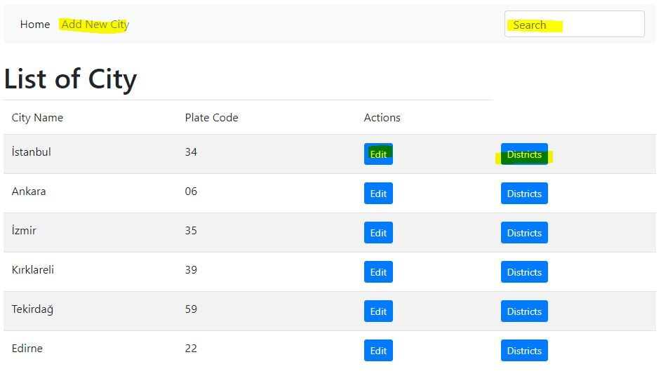
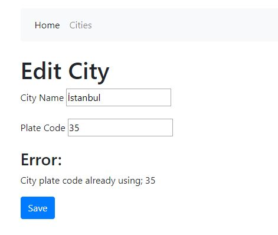
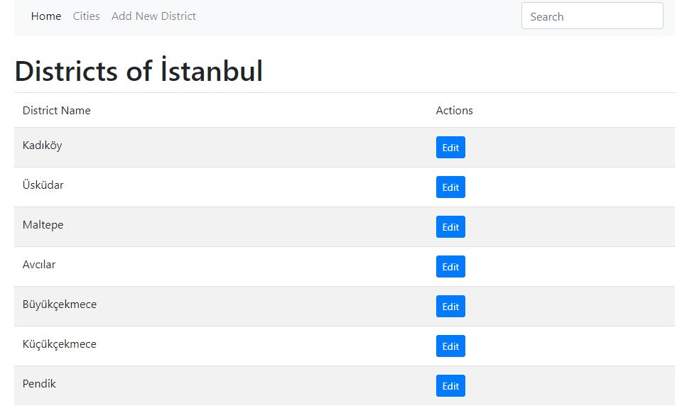
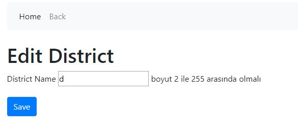

Açıklamalar
Üstteki menüden Cities linkine tıklayarak şehir listesine ulaşabilirsiniz.
Şehir listesinde Add New City linkine tıklayarak yeni şehir ekleyebilir veya listedeki Edit linkine tıklayarak ilgili satırdaki şehiri güncelleyebilirsiniz. Search girişi ile şehirlerde arama yapabilirsiniz.
Şehir adı ve plaka için minimum 2 karakter kontrolü yapılıyor. Şehir adı için maksimum 255 karakter, plaka için ise 5 karakter kontrolü yapılıyor. Ayrıca plakanın farklı bir şehirde kullanılması durumunda uyarılıyor.
Şehir Listesinde ilgili şehirin ilçeleri için Districts linkine tıklanabilir. İlçeler ekranında yeni ilçe ekleyebilir veya varolanı değiştirebilirsiniz.
İlçe adı minimum 2 karakter, maksimum 255 karakter olabilir.
